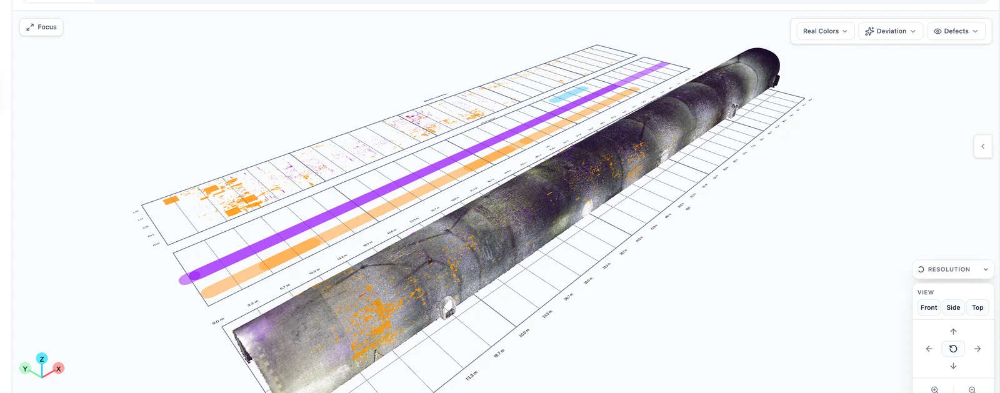
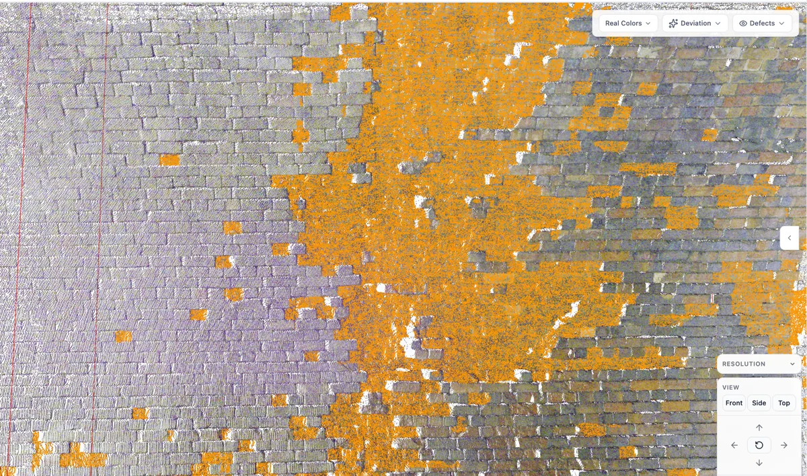

I look for the delicate balance between physics and learning that lets intelligence interact with the physical world.
My work treats physics as a set of constraints that models should obey. I study how differentiable simulation, energy-based dynamics, and world models can be integrated to keep perception, prediction, and action physically consistent, allowing models built from imperfect real-world observations to behave like the physical systems they represent.
My long-term goal is robust and trustworthy construction robotics: machines that can robustly inspect, assemble, and interact with the complex and dynamic built environment under conditions not represented in their training data, with behaviour that engineers can understand and rely on.
I am a Research Associate in the Department of Engineering at the University of Cambridge, working with Brian Sheil at the Centre for Smart Infrastructure and Construction and the Laing O’Rourke Centre. I am also Head of AI at InfraMind Labs, a Techstars-backed start-up bringing AI to infrastructure. At InfraMind, I lead the development of its AI algorithms. The methods I developed during my PhD now form the core of the company’s digital inspector, the first system of its kind, which is currently being trialled by National Highways, Network Rail, and Transport for London. I received my DPhil from the University of Oxford in 2025 under the supervision of Sinan Acikgoz and Brian Sheil. I also co-supervise research students through collaborations with Oxford, TUM, MIT, Harvard, and PolyU.
Inspecting every bridge and tunnel across a country by hand is simply impractical. I develop an end-to-end pipeline that uses deep learning to segment large-scale infrastructure point clouds into structural components, then applies unsupervised learning to identify geometric anomalies indicative of defects without labelled defect data. Designed for surveys containing hundreds of millions of points, the pipeline has been commercialised and now supports InfraMind Labs’ digital inspection product line.
A digital world is useful only if it behaves like the physical system it represents. I combine differentiable simulation, neural dynamics, system identification, and generative models to reconstruct physically consistent digital environments and build world models that preserve the behaviour of their real-world counterparts.
Physically grounded world models can predict how objects will behave during interaction, but prediction alone is not enough. The next challenge is to enable robots to understand long-horizon tasks and translate the reasoning capabilities of large language models into robust physical action. I explore multimodal systems that combine RGB images, point clouds, and tactile sensing to ground robotic planning and manipulation in scene geometry, predicted mechanical behaviour, and real-time physical feedback.
InfraMind turns LiDAR, imagery and inspection records into risk-ranked engineering decisions — described by its investors as MRI scans for bridges, tunnels and buildings. The company grew out of this line of research at Cambridge with Brian Sheil, launched in 2024 out of Techstars, and is backed by Fuel Ventures. I lead the AI function: a strong team with good researchers and engineers, and the end-to-end industrial pipeline for infrastructure inspection and monitoring.


From paper to product. The synthetic-data segmentation pipeline behind BridgeNet and Tunnel Scanner is what lets the platform label an asset it has never seen before; the unsupervised anomaly detection behind 3D-Multi-FPFHI is what lets it flag a defect nobody has labelled.
Deployed with Jacobs · National Highways · Transport for London · Network Rail
Department of Engineering, University of Cambridge
yj401@cam.ac.uk ·
jyx.civil@gmail.com
Open to collaborations on physics-grounded 3D learning, embodied manipulation and infrastructure AI — and always interested in strong people for the InfraMind AI team.